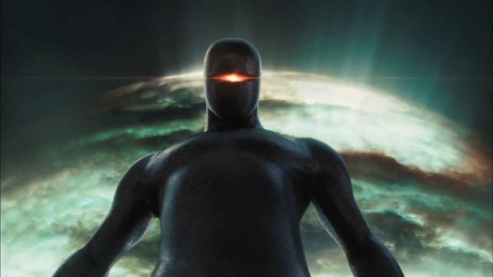

O Dia em que a Terra Parou (em inglês: The Day the Earth Stood Still) é um filme americano de 2008, do gênero ficção científica, realizada por Scott Derrickson. É uma refilmagem do clássico homônimo, que, por sua vez, foi inspirado no conto Farewell to the Master de Harry Bates, dirigido por Robert Wise em 1951. Contudo, desta vez, a ameaça à Terra não é a corrida armamentista, mas os danos ao meio ambiente.
Sinópse

Inspirado no filme original feito em 1951, The Day The Earth Stood Still é um filme norte-americano que mostra a situação de uma invasão alienígena ao planeta Terra.
Em uma família normal, uma mulher é capturada pela polícia e levada para uma reunião com outros cientistas.
O objetivo é anunciar que em algumas horas, algo, semelhante a um asteroide se chocaria com a Terra, e estava se movendo rapidamente, o que dificultava a detenção do objeto misterioso.
Na verdade, o suposto asteroide era um globo gigante que fez um pouso suave no Central Park, em Nova Iorque. De dentro do globo, sai um homem e um robô gigante. O homem, chamado de Klaatu, levou um tiro ao sair, mas recuperou-se e foi interrogado horas depois
Depois desse dia, outros pequenos e grandes globos pousaram na Terra.
Bilheteria

O filme estreou em primeiro lugar nos Estados Unidos no fim de semana do dia 12 de dezembro de 2008, e arrecadou 30.480.153 de dólares. Em exibição durante 16 semanas, arrecadou US$ 79.366.978 na América do Norte (quase igual ao custo total da produção, que foi de US$ 80.000.000), e no resto do mundo arrecadou mais US$ 151.465.000, totalizando US$ 230.831.978.
Crítica
 François Truffaut: Crítico Cinematográfico
François Truffaut: Crítico Cinematográfico
The Day the Earth Stood Still tem recepção mista por parte da crítica especializada. Com o Tomatometer de 21% em base de 192 críticas, o Rotten Tomatoes chegou ao consenso: "Pesado em efeitos especiais, mas sem uma história coerente em sua base, The Day the Earth Stood Still é subpar re-imaginação do clássico de ficção científica de 1951". Por parte da audiência do site tem 27% de aprovação.[5] No Metacritic tem 40% de Metascore em base de 34 avaliações. Por parte dos usuários do site tem 4.6 de pontuação.